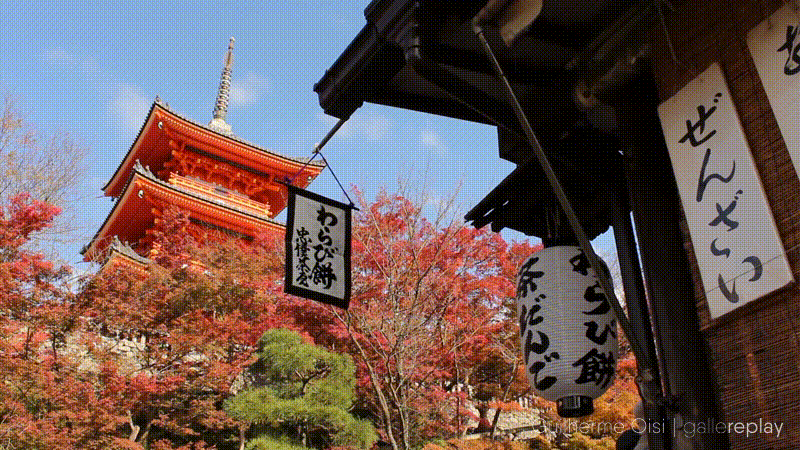
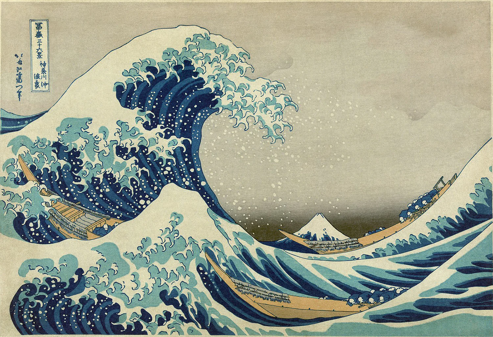

♣
♣
Intro To Brandon
Home
Topic
Favorite Cluture
Flowers that Represent
People that Insipre me
Meal that Represent
Wire Frame
♠
A culture i really admier is the japanese Cluture know for harmony, mutual respect and Mostly becuse of their art work and their tradition espaicly the architecture
♠
 